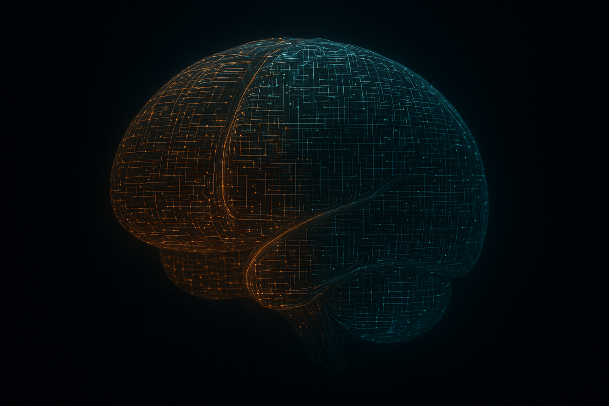
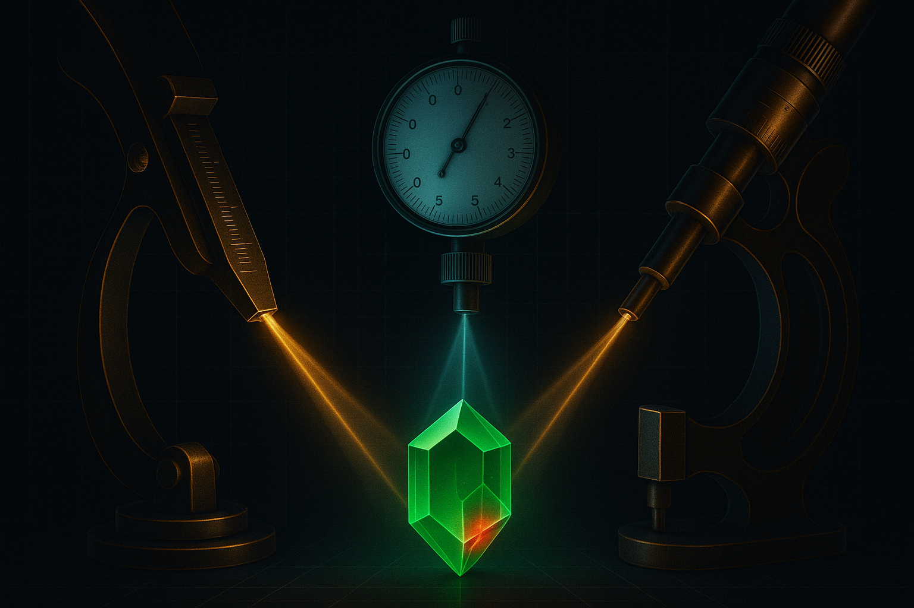

One downloadable brain that makes any AI assistant answer from Ruv's real source — and stops it drifting back to its training.
rUv (Reuven Cohen) builds open-source, Rust-first AI infrastructure — the RuVector engine, ruflo orchestration, AgentDB memory, RuLake cache, and more. The RuvNet Brain indexes 18 building-block repos into 75,509 source chunks, and one tool — search_ruvnet — searches them all at once, returning whole source files labeled by repo. Install it once, then point it at any repo you're working in.

It's just local files — a vector index plus the real source text. Free and open source at github.com/stuinfla/ruvnet-brain. Nothing leaves your machine.
# the one line — downloads the brain + wires the Claude Code plugin npx github:stuinfla/ruvnet-brain # (npm publish pending — then simply: npx ruvnet-brain) # …prefer to wire it by hand? do this instead: # 1 · unzip the bundle into your project as kb/ unzip ruvnet-brain.zip -d kb/ # 2 · install the local reader cd kb && npm i # 3 · add the ruvnet-brain entry from mcp.snippet.json — one tool, search_ruvnet, searches ALL repos "ruvnet-brain": { "command": "node", "args": ["kb/forge-mcp-all.mjs"] } # 4 · …or just ask across every repo from the CLI right now node forge-ask-all.mjs --dir . --q "how does ruflo persist memory?"
Pick a question. Left: an assistant guessing from training. Right: the same model with the brain wired in — grounded in Ruv's real source, every claim cited. Watch what changes.
No backend, no API key. The only difference is the brain in context: it called search_ruvnet, pulled the real passage, and answered from Ruv's own source — not its training prior.
Ruv ships extraordinary infrastructure — RuVector alone is 1.58 million lines. But when you're not Ruv, it doesn't work for you: point an AI at the repo and it skims, guesses, and quietly argues against an architecture it doesn't understand.
~248 repos, an engine of 100+ crates — too big for anyone to hold in their head. So AI assistants summarize from memory and miss the decisive detail.
Its training prior whispers "use pgvector, use Pinecone — that exotic Rust thing probably isn't real," so it drifts off Ruv's architecture even after "reading" the docs. Knowledge alone doesn't fix behavior.
Every prior attempt came up short: topical not deep, single-layer, and — worst — declared "done" by claim. "You said it was done; it was 30%."
Their assistant gives a confidently wrong answer about RuVector — and they can't tell it's wrong. The gap between Ruv's intent and what gets built never closes.
It skims, falls back to training, and quits. So the fix isn't a KB the assistant can search — it's a brain that has already done the deep traversal and points the assistant to the exact line of code, removing its discretion to give up. That single inversion is the whole design.
Each layer closes exactly the gap the others can't. The engine does the digging at build time; the assistant just answers.
↑ The five L0–L4 layers above are how the brain stores knowledge; this stack is the RuvNet ecosystem it indexes — apps on top, the RuVector engine at the base.
A question doesn't get a doc that's near the answer — it gets the exact implementation, served into context, so the assistant answers from the code it would otherwise have skimmed past.
you ask · "how does ruflo persist agent memory?"
↓
[hook] auto-queries the brain — symbol index → memory/src/agentdb-backend.ts + adapter + repository
↓
[rerank] a cross-encoder reads query + passage together → keeps the file that implements it
↓
real source injected into context — it can't skim past it
↓
answer: "SQLite backend via better-sqlite3, AgentDB adapter, hybrid repository — here's the store()/search() path…" (cites the files)
RAG decides what to add to the prompt. This decides what the model isn't allowed to make up. A UserPromptSubmit hook (a rule that runs on every prompt) fires search_ruvnet before the assistant answers and injects the real source — so grounding is not optional. That enforcement, not the retrieval, is the novelty.
There are re-runnable proof batteries — real questions in, the right source expected back. The honest part isn't one number; it's the split underneath it — and the two misses we still own.
The hard case is a newcomer who only describes a need — "a thing that caches vectors across processes" — which used to route correctly just 33% of the time. The fix: capability cards — a capability-phrased passage per building block that lets a described need find the right repo without naming it. Re-run it yourself with node scripts/prove.mjs.

Tested the hard way — on a fresh machine: unzip → npm i → cold-download the embedding model → query. It came back 3 / 3 grounded hits. Nobody downloads it and gets an empty shell.
| How it's asked | Example | Score | |
|---|---|---|---|
| Repo named or specific | "how does ruflo persist memory?" | 47/48 | |
| By description (no repo name) | "a thing that caches vectors across processes" | 27/28 | |
| Helix-context demo | unnamed asks against helix context | 7/8 |
Two known misses remain, and we own them: "route to cheaper models to cut cost" still routes to ruflo instead of agentic-flow (orchestration and cost overlap), and an unnamed "methodology" ask routes to synthlang instead of sparc. Everything else lands.
The install one-liner up top does all of this for you. By hand it's just as short — here's what each step buys you.
The bundle (all 18 building-block repos, 75,509 source chunks) unzips into your project as kb/ — or install once and point it at any repo. Gitignore it; size doesn't matter when it carries the intel.
The ruvnet-brain entry in .mcp.json exposes a single tool, search_ruvnet, that searches every repo at once and returns whole source files labeled by repo. (Per-repo tools ship too, to scope to one.)
Claude / Cursor / Codex now answer from Ruv's real code, with citations — and get pulled back when they drift. The brain rebuilds itself nightly, always date- and SHA-stamped.
Yes — the bundle is just local files (a vector index + the source text). The .mcp.json wires a local stdio server (forge-mcp-all.mjs) that only reads those files and returns text. Embeddings run on your machine via @xenova/transformers. Nothing is sent anywhere — no network calls at query time.
The hard part — proving an AI answers from real source instead of its training — works, with receipts you can re-run. 18 building-block repos are built & searchable, and the 421 MB download is verified on a fresh machine. The newcomer "by-description" gap is now closed; what remains is portability hardening and the public release.
5-layer design, deep-walk pipeline, dual variants (MiniLM-384 + bge-768) past an anti-regression guard, symbol index, cross-encoder rerank, L2 + per-repo concept primers, a UserPromptSubmit grounding hook, evergreen self-update, date+SHA stamping.
ruflo · RuVector · AgentDB · RuLake · RuView · agentic-flow · SPARC · qudag · safla · ruv-fann and more — 75,509 source chunks behind one search_ruvnet tool, verified on a fresh machine.
It lands the right source whether the repo is named or only described — the newcomer gap that used to be the weak spot is now closed by capability cards. It cites real files, never invents repos, and the two residuals are named honestly above.